01/50
Robot Factory Assembly Line
Interactive Graphics Course Project — Three.js, WebGL, JavaScript
A real-time browser-based 3D factory where robots, conveyor systems, a drone, a quadruped logistics robot, doors, elevator navigation, lights, textures, shadows, and simulation run inside one coherent interactive scene.
- Theme: connected industrial robot factory
- Implementation: static web application with Three.js modules
- Focus: graphics fundamentals made visible through interaction and animation
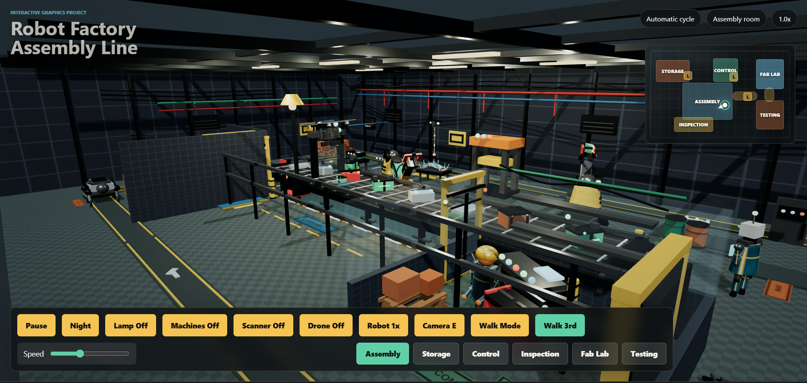
02/50
Factory Overview
Complete scene used to introduce the project
03/50
Implemented Graphics Concepts
How the scene demonstrates the main technical ideas
| Concept | Project evidence |
|---|---|
| Hierarchical models | Robot arms, technician, drone, quadruped, doors, avatar. |
| Lights and textures | Hemisphere, directional, point, spot lights; procedural CanvasTexture maps, glass, emissive screens, material variation. |
| User interaction | Room buttons, camera presets, walk mode, minimap, F-key door/elevator/cable interaction, toggles, speed slider. |
| Animations | All animations authored in JavaScript: robot poses, conveyor flow, drone patrol, quadruped gait, doors, lights, cable. |
| Physics / simulation | Interactive mass-spring cable using gravity, Hooke force, damping, drag, and sleeping when energy dissipates. |
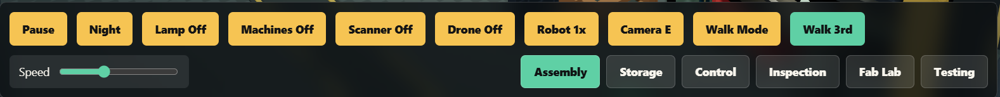
04/50
Technology Stack
Browser-native real-time graphics
- Three.js 0.164.1 for scene graph, cameras, lights, meshes, materials, renderer, and math utilities.
- WebGL renderer targets the browser GPU through a canvas.
- JavaScript modules organize the application into scene construction, state, helpers, entities, animation, and interaction logic.
- HTML and CSS provide HUD, control panel, minimap, layout, and responsive presentation.
Environment / run command
python -m http.server 5173
# Open http://127.0.0.1:517305/50
Static Application Architecture
No backend required
| File | Role |
|---|---|
| index.html | Canvas, import map, HUD, buttons, minimap. |
| src/main.js | Renderer, scene setup, rooms, interactions, animation loop. |
| src/state.js | Runtime state: running, speed, camera mode, walk state, presets. |
| src/geometry.js | Reusable mesh helpers and shadow setup. |
| src/materials.js / textures.js | Materials and procedural CanvasTexture generation. |
| src/entities/* | Environment, props, machines, characters, production systems. |
Architecture flow
index.html → src/main.js → state/helpers/entities → WebGLRenderer
06/50
Runtime Initialization
How the scene starts
- Create renderer, scene, fog, camera, OrbitControls, lights, and shared state.
- Build rooms, machines, robot arms, production objects, drone, quadruped, technician, avatar, doors, elevator, and cable simulation.
- Attach UI references and input handlers.
- Start requestAnimationFrame loop.
Setup snippet
const renderer = new THREE.WebGLRenderer({ canvas, antialias: true });
renderer.setPixelRatio(Math.min(window.devicePixelRatio, 1.5));
renderer.shadowMap.enabled = true;
const scene = new THREE.Scene();
const camera = new THREE.PerspectiveCamera(
50, window.innerWidth / window.innerHeight, 0.1, 100
);07/50
Frame Update Loop
One loop coordinates rendering, animation, simulation, and input
- requestAnimationFrame drives all frame updates.
- Delta time is capped for stability.
- Global speed and pause state control timing.
- Each subsystem updates its own state: walking, robots, production line, drone, quadruped, doors, cable, minimap, camera interpolation.
- Renderer draws the final scene after state updates.
Actual loop structure
function animate() {
requestAnimationFrame(animate);
const delta = Math.min(clock.getDelta(), MAX_FRAME_DELTA);
updateWalkMode(delta);
updateSlidingDoors(delta);
updateMassSpringCable(springCable, delta, clock.elapsedTime);
controls.update();
renderer.render(scene, camera);
}08/50
Connected Factory Environment
A map, not a single isolated room
- Assembly room: conveyor, robot arms, scanner, press, production flow.
- Storage room: racks, pallets, barrels, quadruped load zone.
- Control room: glass booth, technician, desk, screens.
- Inspection room: open robot-clear transfer area, mesh exhibit, and scanner-related visuals.
- Fabrication lab and testing chamber extend the technical world through the annex corridor.
- Elevator landings connect vertical navigation points.
Room connection snippet
createDoorFrame(roomGroup, [20.0, 0, 5.75], Math.PI / 2, 3.3, ANNEX_DOOR_HEIGHT);
slidingDoors.push(createSlidingDoor(
roomGroup, [20.0, 0, 5.75], Math.PI / 2, 3.0, "fabrication"
));
createAgvLane(factory, agvPath, 0.95);09/50
Scene Graph and Parent–Child Transformations
The central modeling idea
- Complex objects are nested THREE.Group structures.
- Moving a parent automatically transforms all child meshes.
- Pivots are placed at meaningful mechanical joints.
- This reduces manual world-space updates and makes animation structurally correct.
Group hierarchy snippet
const robot = new THREE.Group();
const shoulder = new THREE.Group();
const elbow = new THREE.Group();
robot.add(base);
base.add(shoulder);
shoulder.add(upperArm, elbow);
elbow.add(forearm, wrist);10/50
3D Transformations in the Project
Translation, rotation, scale, and local coordinate systems
| Transformation | Visible evidence |
|---|---|
| Translation | Conveyor parts, drone path, doors sliding, elevator stops, walking avatar. |
| Rotation | Robot joints, drone propellers, quadruped hips/knees, camera yaw. |
| Scale | Reusable objects adapted for walls, rails, boxes, signs, and props. |
| Local transforms | Gripper jaws and carried object follow wrist coordinates. |
Transform snippet
joint.rotation.z = angle;
child.position.set(localX, localY, localZ);
parent.add(child);11/50
Industrial Robot Arm Hierarchy
The strongest articulated model
- Base and waist pivot rotate the upper robot.
- Shoulder and elbow pivots define reach.
- Wrist pivot orients the gripper.
- Left and right jaws open and close in local space.
- Carried object is attached inside the wrist/gripper hierarchy.
Arm pivot construction snippet
const waistPivot = new THREE.Group();
robot.add(waistPivot);
const shoulderPivot = new THREE.Group();
waistPivot.add(shoulderPivot);
const elbowPivot = new THREE.Group();
upperArm.add(elbowPivot);12/50
Robot Arm Evidence
Articulated hierarchy visible in the live scene
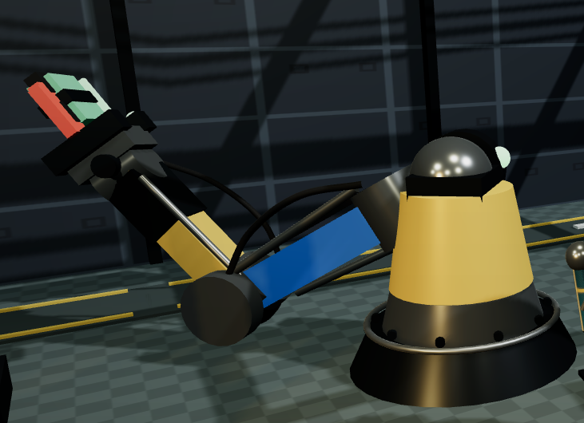
13/50
Robot Pick-and-Place Animation
Authored JavaScript interpolation, not imported animation
- The robot moves through staged poses: approach, grip, lift, rotate, lower, release, return.
- Each pose stores meaningful joint values.
- Smooth easing interpolates between pose states.
- The belt object visibility and carried-object visibility are synchronized.
Pose interpolation snippet
const pose = interpolatePose(start, end, localT);
robotRig.waistPivot.rotation.y = pose.waist;
robotRig.shoulderPivot.rotation.z = pose.shoulder;
robotRig.elbowPivot.rotation.z = pose.elbow;
robotRig.clawLeft.position.z = pose.claw * 0.42;14/50
Quadruped Logistics Robot
Route animation plus hierarchical leg motion
- Body shell, front sensor head, glowing eyes, side rails, cable details, and cargo platform.
- Four hip groups and four knee groups form a leg hierarchy.
- The whole robot follows a closed factory road route.
- Legs use phase offsets so diagonal pairs alternate.
- Cargo visibility changes near load and drop stations.
Route + gait phase snippet
const stride = Math.sin(time * 6.8 + leg.phase);
const lift = Math.max(0, stride);
leg.hip.rotation.x = stride * 0.34;
leg.knee.rotation.x = -0.18 - lift * 0.32;
agv.position.lerpVectors(start, end, progress);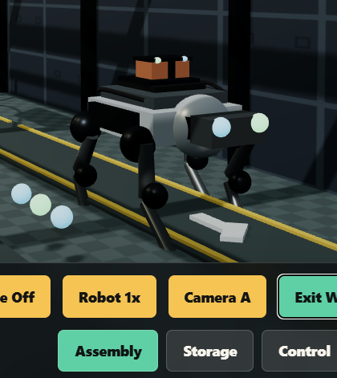
15/50
Quadruped Logistics Robot
Dog-like robot replacing the older cart-style vehicle
16/50
Drone Inspection System
Another animated hierarchy
- Drone body, arms, rotors, sensor, cargo clamp, scan beam, status lights, and carried sample are grouped.
- Propellers rotate continuously as local child transforms.
- Drone follows a patrol route across production zones.
- Scan beam and ring are activated by state.
- Sample is temporarily parented under the drone during carry phases.
Drone route interpolation snippet
const routeIndex = Math.floor(routeTime) % dronePatrolPoints.length;
const nextRouteIndex = (routeIndex + 1) % dronePatrolPoints.length;
const routeProgress = smoothStep(routeTime % 1);
droneTarget.lerpVectors(
dronePatrolPoints[routeIndex],
dronePatrolPoints[nextRouteIndex],
routeProgress
);17/50
Drone Inspection
Patrol, scan beam, and carried sample behavior
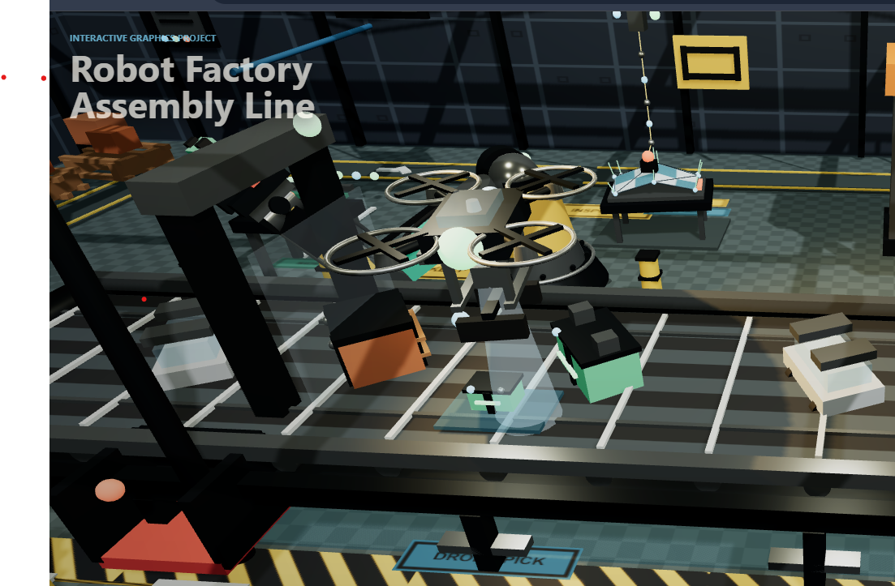
18/50
Technician and Walk Avatar
Character modeling without imported animated assets
- Technician contains body, head, helmet, visor, arms, legs, tablet, and idle pivots.
- Third-person avatar is a visible controllable robot-like character.
- Avatar position and yaw persist after exiting walk mode.
- Re-entering third-person walk resumes from the saved position.
Persistent walk avatar snippet
walkAvatarHasPosition = true;
walkAvatarYaw = state.walkYaw;
walkAvatar.visible = true;
walkAvatar.position.y = 0;
walkAvatar.rotation.y = walkAvatarYaw;
animateWalkAvatar(walkAvatar, state.walkAnimTime, isMoving);19/50
Camera Systems and Projection
Multiple views over the same 3D world
- PerspectiveCamera gives natural depth projection.
- OrbitControls provide mouse orbit, pan, and zoom outside walk mode.
- Authored camera presets frame overview and room-specific views.
- Room buttons transition camera position and target through interpolation.
- Walk mode switches between first-person camera and third-person follow camera.
Camera interpolation snippet
const camera = new THREE.PerspectiveCamera(fov, aspect, near, far);
camera.position.lerp(targetPosition, alpha);
controls.target.lerp(targetLookAt, alpha);20/50
Walk Mode and Navigation
Interactive exploration as a graphics requirement
- Keyboard movement: W/S or arrows for forward/back, A/D for strafe, Q/E or arrows for turning, Shift for faster movement.
- Walk 3rd / Walk 1st button changes camera mode.
- Minimap tracks the active subject or parked avatar.
- Walk mode makes the factory inspectable from human scale.
Walk movement snippet
walkMovement.set(0, 0, 0);
if (pressedKeys.has("w")) walkMovement.add(walkForward);
if (pressedKeys.has("d")) walkMovement.add(walkRight);
walkMovement.normalize().multiplyScalar(moveSpeed * delta);
isMoving = moveWalkSubject(subjectPosition, walkMovement);21/50
Walk Mode and Minimap
Third-person control plus circular location feedback
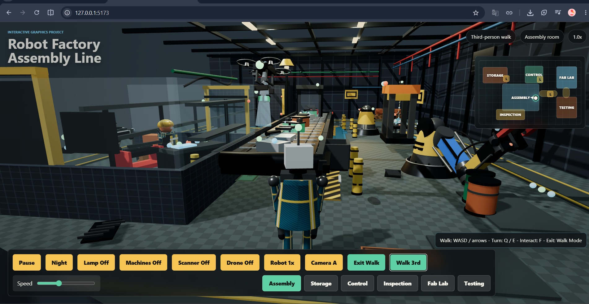
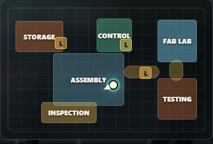
22/50
Collision, Doors, Elevator, and Cable
Lightweight interaction constraints
- Movement is clamped to factory bounds.
- Walls, machines, racks, conveyor, desks, annex structures, and doors are represented as blocking volumes.
- Closed doors block movement until they open enough.
- F is a contextual interaction key: elevator first, then doors, then cable simulation.
- Diagonal movement tests separate axes so the user can slide along obstacles.
Actual F-key priority
if (key === "f" && state.walkMode) {
if (!useNearestElevator() &&
!openNearestDoor() &&
!kickNearestSpringCable()) {
modeLabel.textContent = "No interaction nearby";
}
}23/50
Door Interaction
Closed-door blocking and F-key opening behavior
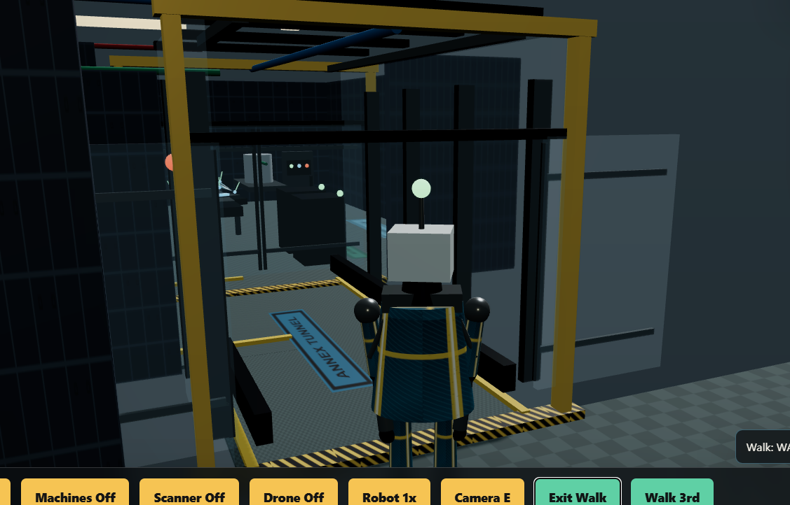
24/50
User Interface and Live Controls
Scene state exposed through controls
| Control | Effect |
|---|---|
| Pause / Resume | Stops or continues animated timing. |
| Night | Changes background, fog, light intensity, and emissive emphasis. |
| Lamp | Toggles inspection and ceiling lamp groups. |
| Machines | Stops or resumes production-line machine timing. |
| Scanner / Drone | Shows or hides those systems. |
| Speed slider | Changes global animation speed. |
UI toggle snippet
toggleMachines.addEventListener("click", () => {
state.machinesOn = !state.machinesOn;
setToggleState(toggleMachines, state.machinesOn,
"Machines Off", "Machines On");
});25/50
Conveyor and Production Line Geometry
Primitives composed into a machine
- Belt deck, side rails, lower frame, rollers, end drums, supports, cross bars, and safety details.
- Built from boxes, cylinders, planes, and grouped helper meshes.
- Production objects move above the belt through staged zones.
- Scanner and press elements provide visual feedback.
Conveyor primitive snippet
addBox(belt, [15.75, 0.08, 2.28], [0, 0.92, 0], materials.belt);
addBox(belt, [16.15, 0.14, 0.16], [0, 1.04, -1.3], materials.brushed);
addBox(belt, [16.15, 0.14, 0.16], [0, 1.04, 1.3], materials.brushed);
const roller = addCylinder(belt, 0.105, 0.105, 2.38, [x, 0.8, 0], materials.brushed, 24);
roller.rotation.x = Math.PI / 2;26/50
Conveyor and Production Line
Belt geometry, rollers, production objects, and robot station
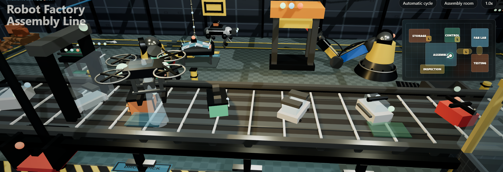
27/50
Conveyor Motion and Production State
Texture motion plus object path animation
- The belt appears to move by offsetting its texture coordinates over time.
- Objects follow position updates along a scripted production path.
- Object state determines scanner feedback, press timing, accept/reject direction, and pickup visibility.
- Robot pickup is synchronized with production object location.
Texture offset snippet
beltTexture.wrapS = THREE.RepeatWrapping;
beltTexture.wrapT = THREE.RepeatWrapping;
materials.belt.map.offset.x = -machineElapsed * 0.58;28/50
Geometry Construction Strategy
Code-built geometry instead of imported models
- Most visible objects use Three.js primitives: boxes, cylinders, spheres, torus shapes, planes, and tubes.
- Reusable helper functions enforce consistent material assignment and shadow settings.
- Environment details include pipes, cable trays, labels, bollards, drains, racks, pallets, carts, panels, doors, and machines.
- This makes the project self-contained and easy to explain technically.
Reusable mesh helper snippet
export function addBox(parent, size, position, material) {
const mesh = shadow(new THREE.Mesh(
new THREE.BoxGeometry(...size), material
));
mesh.position.set(...position);
parent.add(mesh);
return mesh;
}29/50
Manual TRI MESH Exhibit
Low-level polygonal mesh evidence
- Custom THREE.BufferGeometry is manually defined.
- Position buffer stores vertices.
- UV buffer stores texture coordinates.
- Index buffer defines triangular connectivity.
- computeVertexNormals() calculates normals.
- Wireframe, vertex markers, normal rods, and checker texture make mesh data visible.
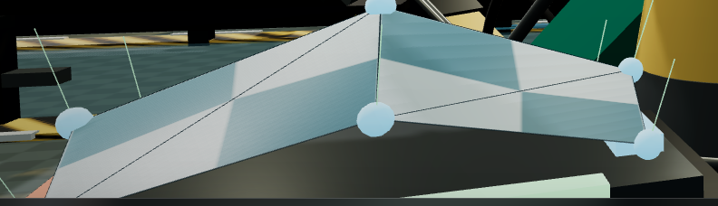
30/50
TRI MESH Exhibit
Manual BufferGeometry with triangles, vertices, wireframe, and normals
31/50
BufferGeometry Data Layout
What primitives normally hide
- Vertex positions define the surface points.
- Indices reuse vertices across triangles.
- UVs map 2D texture coordinates to 3D triangles.
- Normals support lighting calculations.
BufferGeometry snippet
const geometry = new THREE.BufferGeometry();
geometry.setAttribute("position", new THREE.BufferAttribute(vertices, 3));
geometry.setAttribute("uv", new THREE.BufferAttribute(uvs, 2));
geometry.setIndex(indices);
geometry.computeVertexNormals();32/50
Textures and UV Mapping
Raster images placed onto 3D surfaces
- Floor checkers, wall panels, conveyor stripes, hazard stripes, labels, fabric, skin, and helmet colors are generated with canvas.
- Textures are converted to THREE.CanvasTexture and sampled by materials.
- Repeat wrapping allows floor, wall, and belt patterns to tile correctly.
- UV coordinates determine how the texture lands on the TRI MESH exhibit.
Procedural texture snippet
for (let y = 0; y < cells; y += 1) {
for (let x = 0; x < cells; x += 1) {
context.fillStyle = (x + y) % 2 === 0 ? colorA : colorB;
context.fillRect(x * cell, y * cell, cell, cell);
}
}
const texture = new THREE.CanvasTexture(canvasTexture);33/50
Textures on the GPU
CanvasTexture, wrapping, offset, filtering, sampling
- Canvas-generated images are uploaded to GPU memory as textures.
- The moving belt demonstrates animated texture offset.
- Repeated maps prevent large surfaces from looking flat.
- The custom shader samples a texture directly through a sampler uniform.
- Different material maps and roughness values make surfaces visually distinct.
CanvasTexture snippet
const tex = new THREE.CanvasTexture(canvas);
tex.wrapS = tex.wrapT = THREE.RepeatWrapping;
tex.repeat.set(8, 8);
material.map = tex;34/50
Material System
Different surfaces behave differently
| Surface | Material behavior |
|---|---|
| Metal robots/machines | Higher metalness, controlled roughness, specular response. |
| Rubber feet/belts | Darker, rougher material. |
| Glass rooms/doors | Transparent physical material with opacity/transmission-style parameters. |
| Screens/indicators | Emissive materials for visible lights and status feedback. |
| Fabric/plastic | Rougher non-metal materials with generated texture detail. |
Material definition snippet
glowGreen: new THREE.MeshStandardMaterial({
color: 0x68f5a0, emissive: 0x2dff85, emissiveIntensity: 1.6
}),
belt: new THREE.MeshStandardMaterial({
map: beltTexture, roughness: 0.74, metalness: 0.05
}),35/50
Custom ShaderMaterial
Direct shader-style logic beyond built-in materials
- Technician jacket uses custom ShaderMaterial.
- The shader samples fabric texture.
- It combines ambient, diffuse, and rim-light terms.
- World normal, light direction, and camera direction affect final color.
- This demonstrates lower-level shading control in the WebGL pipeline.
Shader snippet
vec3 N = normalize(vWorldNormal);
vec3 L = normalize(lightDirection);
float diffuse = max(dot(N, L), 0.0);
float rim = pow(1.0 - max(dot(N, V), 0.0), 2.0);
vec3 color = texColor * (ambient + diffuse) + rimColor * rim;36/50
Shading Transformations and Normals
Correct lighting depends on transformed normals
- The manual mesh computes vertex normals so lighting can respond to its shape.
- Normal rods in the TRI MESH exhibit make normals visible.
- The jacket shader uses world-space normals and view direction.
- Normals are essential for diffuse response, rim lighting, and perceived shape.
Normal visualization snippet
const normalAttribute = geometry.getAttribute("normal");
const normal = new THREE.Vector3(
normalAttribute.getX(i / 3),
normalAttribute.getY(i / 3),
normalAttribute.getZ(i / 3)
);
normalPositions.push(vertex.x, vertex.y, vertex.z);
normalPositions.push(
vertex.x + normal.x * 0.22,
vertex.y + normal.y * 0.22,
vertex.z + normal.z * 0.22
);37/50
Lighting System
Multiple light types for readable real-time scenes
| Light type | Role |
|---|---|
| Hemisphere light | Broad ambient fill from sky/ground colors. |
| Directional light | Main factory light source and shadow casting. |
| Point lights | Ceiling lamps and localized room lighting. |
| Spot light | Focused inspection lamp. |
| Emissive materials | Machine indicators, scanner beams, screens, robot eyes. |
Light setup snippet
const ambientLight = new THREE.HemisphereLight(0xe4f8ff, 0x303b38, 1.02);
scene.add(ambientLight);
const sun = new THREE.DirectionalLight(0xffffff, 1.58);
sun.castShadow = true;
scene.add(sun);38/50
Shadows and Contact
Depth cues through shadow mapping
- Renderer uses PCF soft shadow maps.
- Important meshes cast and receive shadows.
- Shadows ground robots, crates, machines, racks, and walls against the floor.
- Shadow camera and shadow settings are tuned for the factory scale.
- This is a real-time approximation, not path-traced global illumination.
Shadow setup snippet
renderer.shadowMap.enabled = true;
renderer.shadowMap.type = THREE.PCFSoftShadowMap;
mesh.castShadow = true;
mesh.receiveShadow = true;39/50
Rendering Pipeline and Rasterization
What happens every frame
- Three.js sends scene graph, geometry buffers, textures, materials, lights, and camera matrices to WebGL.
- The GPU rasterizes triangles into fragments on the canvas.
- Depth testing determines visible surfaces.
- Antialiasing and capped device pixel ratio balance image quality and performance.
- Tone mapping improves final brightness and contrast.
Render pipeline call snippet
function animate() {
requestAnimationFrame(animate);
const delta = Math.min(clock.getDelta(), MAX_FRAME_DELTA);
controls.update();
renderer.render(scene, camera);
}40/50
Sampling and Antialiasing
Course concept represented in practical real-time form
- The renderer is created with antialiasing enabled.
- Device pixel ratio is capped to keep frame rate stable.
- Texture filtering and mipmapping are handled by Three.js for CanvasTexture objects.
- The project does not implement Monte Carlo sampling or path tracing; it uses the interactive rasterization path.
Renderer quality snippet
const renderer = new THREE.WebGLRenderer({ antialias: true });
renderer.setPixelRatio(Math.min(window.devicePixelRatio, 1.5));
renderer.toneMapping = THREE.ACESFilmicToneMapping;41/50
Animation Systems Overview
State-driven JavaScript motion
- Robot arms: key-pose interpolation.
- Conveyor: belt texture offset and object path updates.
- Drone: route interpolation, rotor spin, scan/carry states.
- Quadruped: route progress plus phase-offset leg motion.
- Doors: interpolated panel offsets.
- Technician: procedural idle motion.
- Cable: physics-style mass-spring simulation.
Animation dispatch snippet
materials.belt.map.offset.x = -machineElapsed * 0.58;
animateRobot(primaryRobot, robotElapsed, 0, false);
animateRobot(secondaryRobot, robotElapsed, 3.6, true);
updatePrimaryRobotTransfer(robotElapsed, delta);
updateAgv(machineElapsed);
updateSlidingDoors(delta);
updateMassSpringCable(springCable, delta, realTime);42/50
Easing and Interpolation
Manual easing and interpolation
- The project uses manual interpolation with the same conceptual goal as tweening: move smoothly from one state to another.
- Instead of importing animation files, JavaScript computes intermediate values each frame.
- SmoothStep/easing avoids robotic linear jumps.
- This is used for robot joints, doors, cameras, and some UI-visible transitions.
Actual easing helper
function smoothStep(value) {
return value * value * (3 - 2 * value);
}
const t = smoothStep(amount);
joint.rotation.z = THREE.MathUtils.lerp(a, b, t);43/50
Mass-Spring Cable Simulation
Physics-based animation evidence
- Cable is represented as particles connected by springs.
- Each particle stores position, velocity, force, and fixed/free status.
- The cable starts still and only moves after the player presses F nearby.
- Forces include gravity, Hooke spring force, damping along the cable, and air drag.
- Semi-implicit Euler integration advances motion, then the simulation sleeps when energy dissipates.
Interaction impulse
kickMassSpringCable(springCable, direction, 1.05);
particle.velocity.addScaledVector(push, strength * weight);
particle.velocity.y += strength * 0.18;44/50
Mass-Spring Cable
Interactive physics object triggered from walk mode
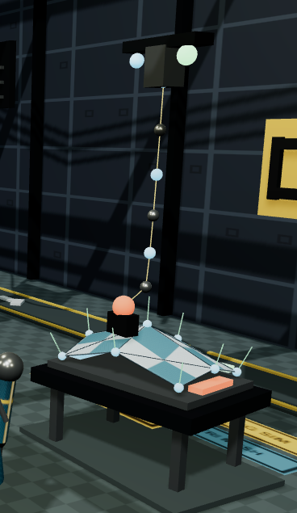
45/50
Simulation Update Details
Small custom physics instead of a full engine
- No Cannon.js, Ammo.js, or Physijs is required.
- The simulation is intentionally small enough to run every frame.
- It demonstrates position/velocity state, force accumulation, numerical integration, damping, and collision response.
- This matches the course physics topic without slowing the project.
Mass-spring core
stretch = length - restLength;
dampingForce = damping * relativeVelocity.dot(direction);
force = direction * (stiffness * stretch + dampingForce);
velocity += (force / mass) * dt;
velocity *= 0.996;
position += velocity * dt;46/50
Transparency, Alpha, and Glass
Rasterization-friendly transparent materials
- Glass rooms, doors, visor, and inspection panels use transparent materials.
- Opacity and depth behavior must be chosen carefully in real-time rendering.
- Glass separates areas while keeping the factory visually connected.
- This represents raster images/alpha and material transparency topics from the course.
Glass material snippet
glass: new THREE.MeshPhysicalMaterial({
color: 0x9ad9ff,
roughness: 0.02,
metalness: 0,
transmission: 0.42,
transparent: true,
opacity: 0.38,
depthWrite: false
}),47/50
Glass and Transparency
Transparent room boundaries and sliding-door materials
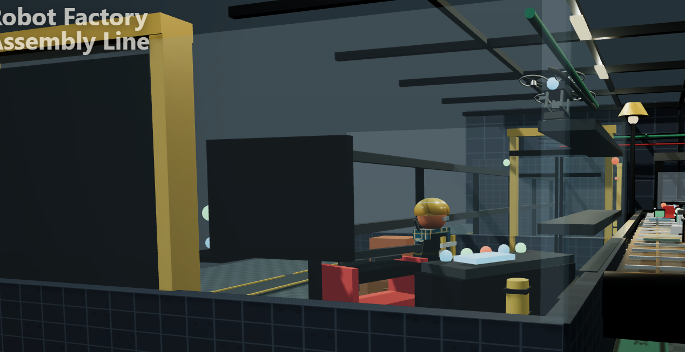
48/50
Emissive Feedback and Night Mode
Readable status and lighting contrast
- Emissive screens, status lamps, scanner beams, robot eyes, and indicators remain visible in darker lighting.
- Night mode changes background, fog, light intensities, and emissive emphasis.
- Lamp toggle shows local lighting contribution.
- These controls prove that lighting is not static decoration.
Night mode state snippet
state.night = !state.night;
scene.background.set(state.night ? 0x080d12 : 0x26333a);
scene.fog.color.set(state.night ? 0x080d12 : 0x26333a);
ambientLight.intensity = state.night ? 0.32 : 1.02;
sun.intensity = state.night ? 0.08 : 1.58;49/50
Night Mode
Lighting contrast, emissive screens, and darker fog/background
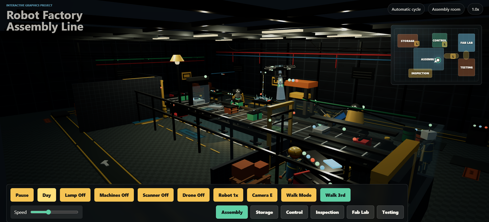
50/50
Conclusion
Technical contribution
Robot Factory Assembly Line combines the main ideas of the Interactive Graphics course into a single real-time WebGL application.
- Explorable connected factory world.
- Code-built geometry and manual BufferGeometry exhibit.
- Hierarchical animated robots, drone, technician, avatar, and quadruped.
- Procedural textures, GPU texture sampling, materials, transparency, and custom shader logic.
- Real-time lighting, shadow mapping, cameras, interactions, and live controls.
- JavaScript-authored animations plus a focused mass-spring simulation.